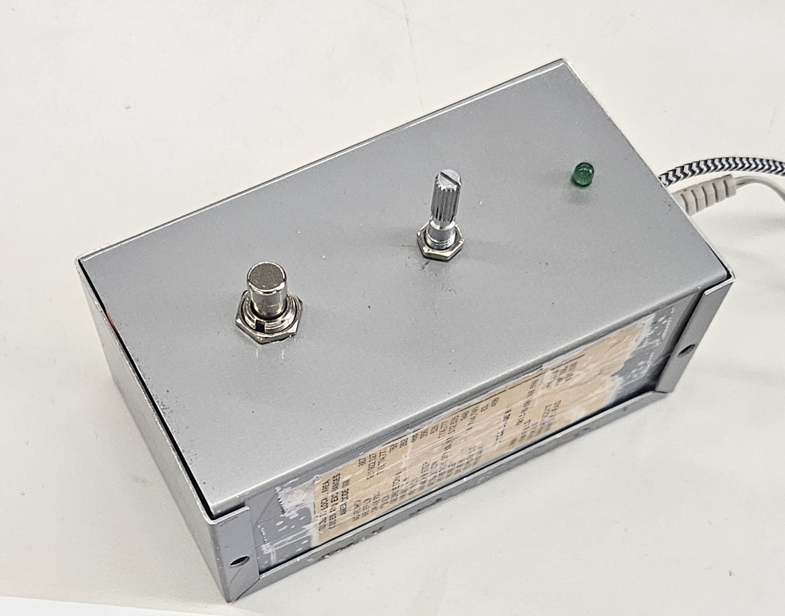
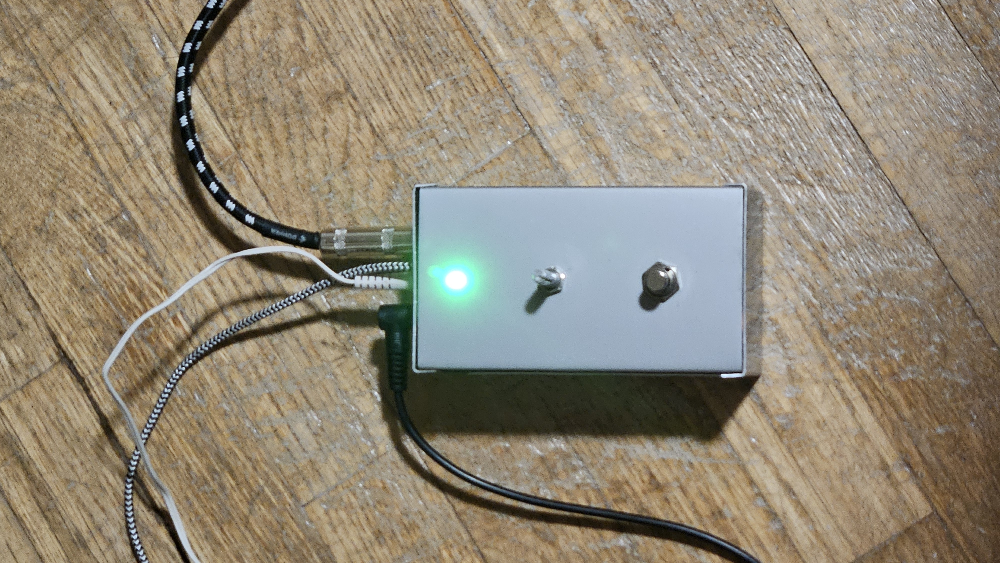
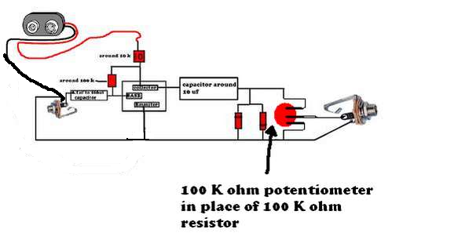
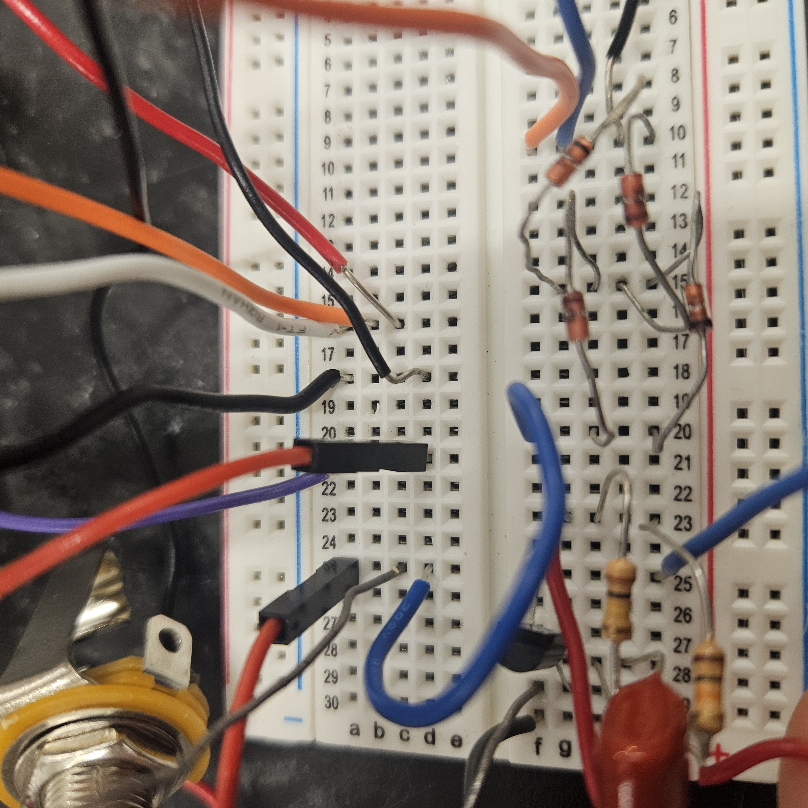
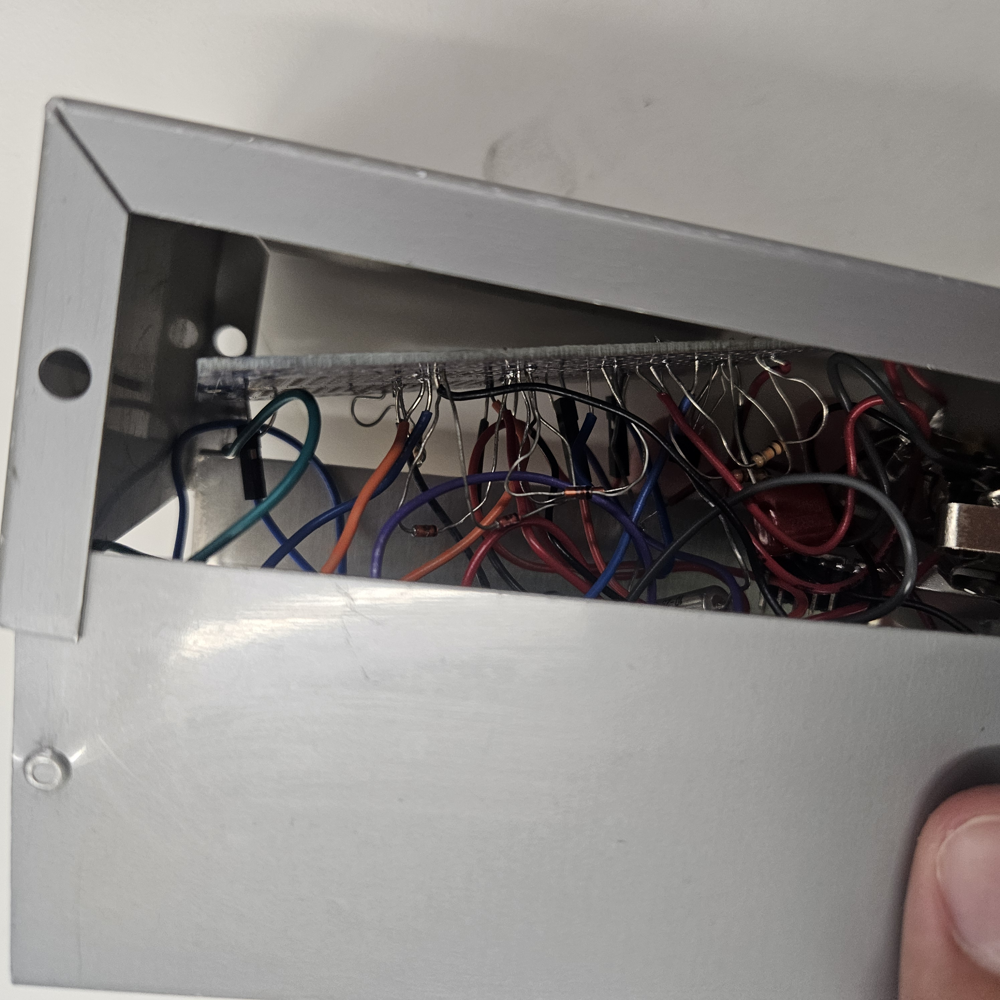
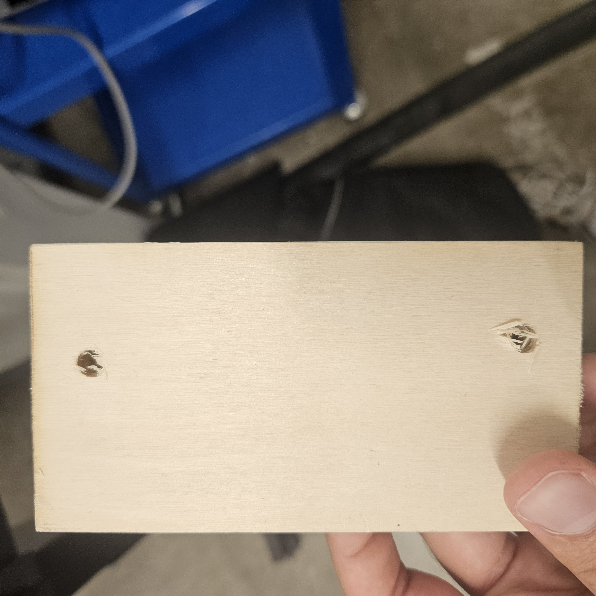

<div class="textcontainer">
<p class="margin"></p>
<h3>Final Project: Distortion Pedal</h3>
<title>Pictures Layout</title>
<style>
:root {
--pic-width: 300px; /* Adjust picture width here */
}
.two-pics {
display: flex;
gap: 10px;
flex-wrap: wrap;
}
.two-pics img,
.single-pic img {
width: var(--pic-width);
height: auto;
}
</style>
</head>
<body>
<p>I decided to make a distortion pedal as my final project because it aligns with my past of guitar related fabrication. Last year, I made a guitar almost from scratch, and the wiring and components used were very similar to those that I used in this project. Another reason that I chose this as my project is because it gets me closer to having a fully homemade guitar setup, In the future I want to make a mint tin amplifier. Having all three would mean I have an amp, a guitar and an effect pedal that I made myself.</p>
<p>My distortion pedal </p>
<p>In my project I used a footswitch as input device, an led as an output device, a microcontroller to convert the momentary switch from the pedal into a toggling variable that controlled the led and the effect, and lasercut wood to stop the enclosure from being an issue
in the photos below, the photos show the light, which can be either on, when the status variable is 1 and the effect is on, or off when the variable is 0 and the effect is off</p>
<div style="display: flex; gap: 20px; flex-wrap: wrap; align-items: flex-start;">
<p></p>
<p></p>
</div>
<p>It took me a while to realize that I needed to use diodes to make the effect better, below is the website that made me realize that.
https://www.wamplerpedals.com/blog/lifestyle-hobby/2024/08/how-to-design-a-basic-distortion-pedal-circuit/</p>
<p>I attached to a switch that would feed the signal either directly to output or into the circuit in the image below</p>
<div style="display: flex; gap: 20px; flex-wrap: wrap; align-items: flex-start;">
<p></p>
<p></p>
</div>
<p>Lastly, I decided to use a nice looking box that I found for the enclosure but unfortunately the box was conductive in some spaces which led to a short circuit. To solve this problem I lasercut out a rectangle of wood to attach the protoboard to so it wouldnt come into contact with the edges.
on the left is the enclosure and circuit before I fixed the short circuiting. on the right is the lasercut wood I used to fix the problem</p>
<div style="display: flex; gap: 20px; flex-wrap: wrap; align-items: flex-start;">
<p></p>
<p></p>
</div>
<p>below is a demo video that compares the sound with and without the effect</p>
<iframe width="560" height="315" src="https://www.youtube.com/embed/SMJ1ph42jjk?si=yr3hH6lb_Qk4IlfP" title="YouTube video player" frameborder="0" allow="accelerometer; autoplay; clipboard-write; encrypted-media; gyroscope; picture-in-picture; web-share" referrerpolicy="strict-origin-when-cross-origin" allowfullscreen></iframe>
<pre><code>
int button = D0;
int led = D1;
int eff = D2
int status = true;
unsigned long previousMillis = 0;
void setup(){
Serial.begin(115200);
pinMode(led, OUTPUT);
pinMode(button, INPUT_PULLUP);
pinMode(eff, OUTPUT)
unpressed button is HIGH
}
void loop(){
Serial.println(digitalRead(button));
if (digitalRead(button) == true) {
status = !status;
digitalWrite(led, status);
} while(digitalRead(button) == true){
while(millis() - previousMillis < 100){
}
previousMillis = millis();
}
}
</code></pre>
</font>
</body>
</html>
</div>